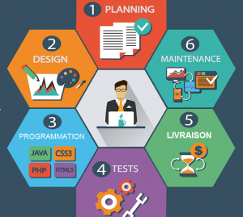
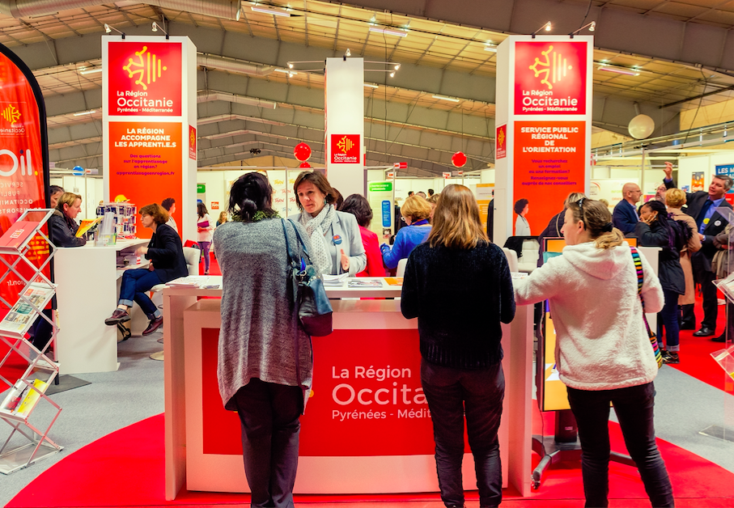

La Région organise les salons du Travail Avenir Formation (TAF) dont le but est de permettre à chaque visiteur quel que soit son statut, de pouvoir accéder à toutes les informations sur les aides, de découvrir les offres de formations et de trouver un emploi en rencontrant directement les entreprises qui recrutent.
Sommaire de la page
Le développeur web, c’est le responsable de la programmation. Il est en charge de la conception de sites, d’applications, de logiciels et de programmes informatiques « sur-mesure » pour répondre aux besoins de son entreprise ou des clients. Pour cela, il analyse d’abord leurs besoins et réfléchit à l’ergonomie du programme à venir, dans l’objectif de satisfaire les utilisateurs. Il dresse ensuite un cahier des charges qui précise tous les détails nécessaires pour ces créations, avant de l’appliquer en écrivant les lignes de code. Enfin, il effectue des tests et dans la majorité des cas, est obligé par la suite de corriger les erreurs et d’adapter le logiciel selon les demandes du client. Après la création du site, de l’application, du programme ou du logiciel commandé, le développeur web a pour mission de le maintenir et de le faire évoluer quand cela est nécessaire. Il est considéré comme le responsable de son bon fonctionnement. Dès que des bugs remontent, il doit les résoudre au plus vite pour qu’ils n’impactent pas le programme en question. Lorsque ses compétences le permettent, il veille à la responsivité du site afin que celui-ci soit optimisé pour le mobile. Le développeur web possède également une casquette de formateur. En effet, il peut être amené à rédiger des guides qui permettront aux utilisateurs de mieux comprendre les programmes créés. Ces explications servent aussi à former les personnes à éviter les erreurs ou à les régler plus facilement en cas de besoin. L’apprentissage peut se faire à travers une formation individuelle ou d’un groupe d’employés.
La majeure partie du travail se fait de manière autonome et individuelle. Toutefois, le développeur web doit savoir exercer au sein d’une équipe lorsqu’il est employé par une entreprise. Ses projets sont supervisés par un chef de projet web et/ou un directeur technique. Ses capacités de communication, d’écoute des besoins de la société ou des clients et de respect des délais sont alors importantes pour mener à bien son travail. Créativité et polyvalence déterminent un développeur web qui sait innover, s’auto-former et s’adapter dans un secteur en constante évolution. Bien évidemment, la maîtrise parfaite des langages (SQL, Javascript, HTML, CSS…), CMS, outils et logiciels informatiques à sa disposition pour la programmation est indispensable.
Rigoureux et parfaitement autonome, un bon développeur doit nécessairement se tenir constamment à jour des nouveautés en matière de programmation, langages, procédures de sécurité, normes… Les évolutions sont constantes et, sans mise à jour permanente, le développeur se verra très vite dépassé.
S’il est autonome, un développeur doit néanmoins savoir travailler en équipe, notamment avec le chef de projet, le webmaster et le webdesigner. Comme ces derniers, le développeur doit également savoir faire preuve d’imagination et de créativité pour résoudre tous les problèmes auxquels il va être confronté tout au long du développement des sites sur lesquels il interviendra. De plus, le développeur doit savoir s’adapter à tous les environnements et intervenir quels que soient le domaine et le type du site Internet : site vitrine, site marchand, blogs…
Les secteurs du numérique, du digital et de l’informatique ouvrent le plus de postes pour les développeurs web. De nombreuses entreprises ont besoin de créer un site, une application, un programme ou un logiciel. Il est donc possible pour un développeur web de travailler dans une agence de prestations, dans une société ou de manière indépendante en free-lance. Avec plusieurs années d’expérience, il peut acquérir le poste de directeur technique pour gérer une équipe.
Bienvenue dans nos salons dont l’entrée est gratuite. Des espaces distincts vous permettront de répondre à vos problématiques.
